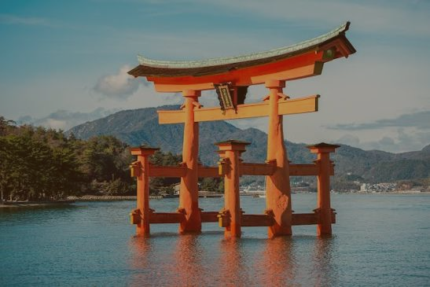
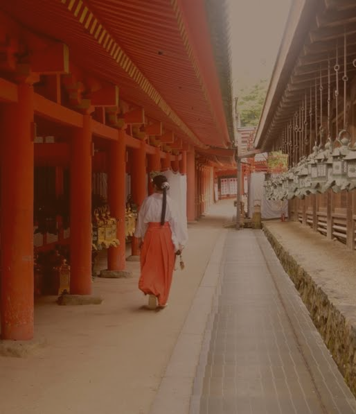
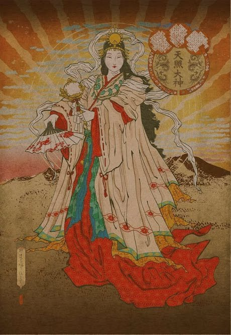
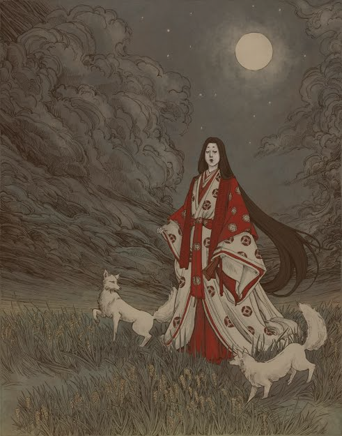
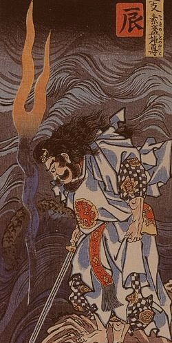
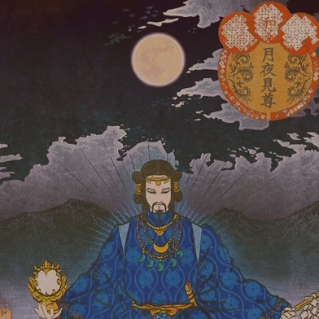
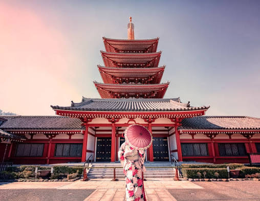

Xintoísmo – Japão
O Xintoísmo Shinto é a espiritualidade tradicional do Japão, baseada na adoração dos kami (espíritos ou divindades). Originado no Japão arcaico, não possui um fundador ou livro sagrado, sendo uma filosofia de vida voltada para a harmonia entre o homem e a natureza

História E Sociedade
As raízes do xintoísmo remontam ao período Yayoi (300 a.C. – 300 d.C.). A sociedade japonesa é profundamente influenciada por esta crença, que estabelece uma linhagem imperial contínua descendente da deusa do sol, Amaterasu. Ao contrário de muitas religiões, o xintoísmo coexistiu e fundiu-se com o Budismo ao longo dos séculos, formando uma cultura religiosa sincrética onde rituais de vida nascimentos e casamentos são xintoístas e ritos fúnebres são budistas
Religião e Cultura
A crença central é o animismo: a ideia de que todas as coisas, vivas ou não, possuem uma essência espiritual ou kami. Os praticantes buscam a pureza espiritual e moral, acreditando que os seres humanos são fundamentalmente bons, mas podem ser corrompidos por impurezas físicas ou espirituais. A prática religiosa envolve rituais, oferendas e festivais para honrar os kami e manter a harmonia entre o mundo humano e o espiritual.
-

Amaterasu
Deusa do Sol e ancestral da família real
-

Inari
Divindade da agricultura, arroz, fertilidade e sucesso nos negócios
-

Susanoo
Deus das tempestades e dos oceanos
-

Tsukuyomi
Deus da Lua e do tempo lunar

Arquitetura
O coração da religião é o santuário jinja, muitas vezes cercado pela natureza. A entrada é marcada pelo portal Torii, que simboliza a transição do mundo comum para o sagrado. Uma prática arquitetônica única é a reconstrução ritual periódica, como no Grande Santuário de Ise, que é totalmente reconstruído a cada 20 anos para manter a pureza e a continuidade das tradições.
Curiosidades:
Os festivais, ou matsuri, são essenciais para celebrar os kami locais e pedir proteção ou boas colheitas. O ritual Shichi-go-san celebra o crescimento de crianças de 3, 5 e 7 anos nos santuários, enquanto o Setsubun envolve a expulsão de espíritos malignos com feijões. O Tanabata celebra a lenda das estrelas Orihime e Hikoboshi, e o Obon homenageia os espíritos ancestrais com danças e lanternas flutuantes.